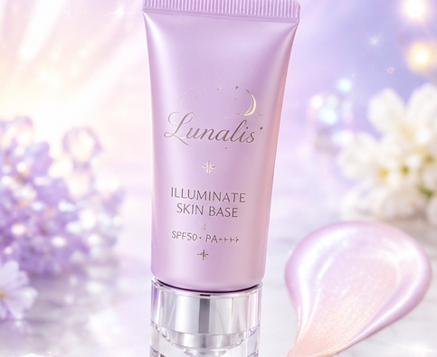
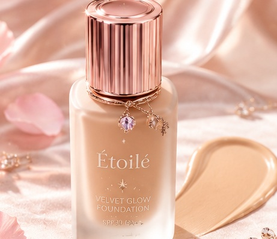
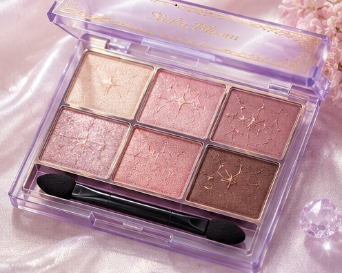
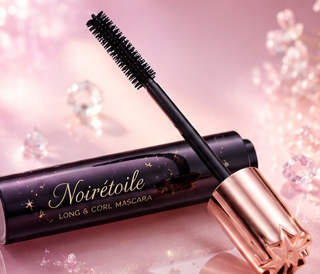
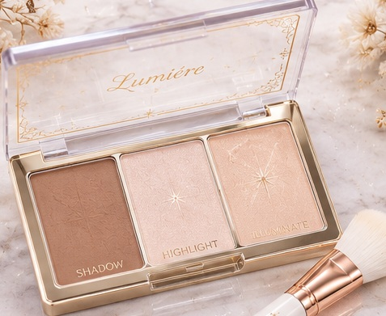
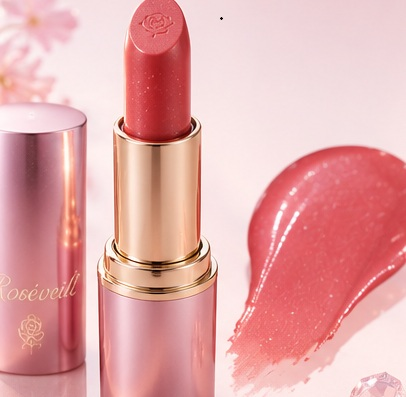

- トップ >
- 化粧品の役割
化粧品の役割
どういう場面で使うのかまとめています。
下地

ファンデーションの前に使います。厚く塗りすぎず薄くるることがポイントです。
ファンデーション

自分の肌の色にあった色を選びましょう。厚く塗りすぎると崩れる原因になります。湿らせたスポンジでたたくと密着しやすいです。
アイシャドウ

目の形にあった塗り方をしましょう。ブラウン系がなじみやすいです。
まつ毛

まつ毛を長くしたり、ボリュームを出すことができます。最初にビューラーでまつ毛を上げて使うことがポイントです。
シェーディング、ハイライト

シェーディングは影を作ることができ、ハイライトはツヤを出すことができます。
リップ

唇に色を付けることができます。ツヤが出るものからマットのものがあります。